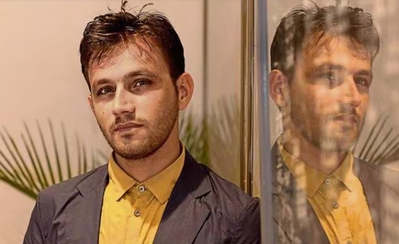

Stories of Hope
-
Kailash Kher
Surviving odd jobs and a failed business, I once stood on the brink of ending it all. But a fateful encounter on the banks of the Ganges changed everything, leading me from despair to redemption on the shores of Mumbai. ...User I had done many odd jobs to survive. I was 20 or 21 when I started doing export business in Delhi. I used to send handicrafts to Germany. Unfortunately, all of a sudden that business collapsed. After facing several problems in business, I went to Rishikesh to become a ‘pandit’. However, I used to feel that I was a misfit there as my fellow mates were younger than me and my views never matched theirs. I was dejected as I was failing in everything..so one day I tried to commit suicide by jumping into the river Ganga. But a person at the Ghat jumped in the Ganga immediately and saved me. He asked, ‘Why did you jump when you don’t know how to swim?’ I replied, ‘To die’ after learning about my intentions of ending my life, he hit me hard on my head. After the incident I locked myself in my room next day, without any meal. I kept wondering about my existence and tried communicating to God during the tough phase. I believe it must be mother Ganga pushing me away and sending me towards father, the sea. So I landed in at the sea shore - Bombay. The way out of such suicidal thoughts came when I stopped thinking whether I am useless or useful and concentrated on my work.
-
Shama Sikander
Sitting on the floor in a dimly lit room, I was lost in thought. I had secluded myself from the world. ... Negativity had blinded my mind. I had no desire, hope or ambition in life. I felt lost in a maze. I had suffered endlessly in my life because of rejection, bullying and betrayal. I was suffering from depression and bipolar disorder. I felt the only way to feel free was to give up my life. I entered my mom’s room, hugged her tight, told her I was going to rest and swallowed a lot of sleeping pills. I was rushed to the hospital and brought back to life. Initially I was angry with my family for saving me. But the moment of truth came soon. The realisation hit me that I if I was alive even after trying to kill myself, I was alive for a reason. I decided to put the pieces together and start afresh. Therapy and meditation helped me discover my biggest strength in my deepest sorrows. It didn’t happen overnight. It took me four years to understand my inner self. I slowly started erasing all the bad memories. I realised that I was very, very strong. It bought a lot of solace and happiness. Today, I feel content and happy in my life and career. I am grateful to my fans for their love and support. I respect the gift of life. My message to those who like giving up: Hang on! Sometimes, the brightest light comes from the darkest places.
-
Reshma Qureshi, acid attack survivor
I was attacked with acid by my estranged brother-in-law when I was 17. He threw concentrated acid on my face in the street. ... We were in our village in Mau Aima, Uttar Pradesh. I had forgotten my burkha back home in Mumbai so I borrowed my sister’s. My brother-in-law mistook me for his wife. I felt the most excruciating pain and lost eyesight in my left eye as a result of the attack. I was in hospital for months. I was the unintended victim of an attack that wasn’t even meant for me. My face was so badly injured, that my family didn’t allow me to look in the mirror. All the mirrors in the hospitals were covered. When we came home for the first time, I went to wash my face in the kitchen. I looked at myself in the mirror and couldn’t recognise myself. That night, I tried to hang myself with the dupatta. My brother Aizaz woke up when he realised I was shuffling around at night. My family lives in a one bedroom chawl in Mumbai and everyone sleeps in the same room. Aizaz turned on the lights and saw me standing on the bed with a dupatta, aiming to reach the fan. He put two and two together and screamed. Everyone woke up and panicked. There were tears, consolation and love. My family told me how much they loved me and comforted me back to sleep. They motivated me to see therapists and kept telling me that I had to live to see justice. The thought of putting my attacker behind bars kept me going strong. I could not die at the hands of my attacker. He may have taken my face, but my life is mine and mine alone and I just had to be reminded of that fact. I saw many acid attack survivors at the NGO Make Love Not Scars. They were in so much pain for no mistake of their own. They were the victims of someone’s misplaced rage. My heart went out to them and I decided to devote my life to bring a smile on their faces. Today, I work with this NGO and help other acid attack survivors overcome depression. If you want help, do reach out to me. Just don’t kill yourself. The sun does shine again. If we don’t have sadness in life, how will we ever appreciate happiness? It’s a cycle. We have to accept and embrace that. Keep moving on. One step at a time.
-

Sumit Kumar, student
It’s Priya’s birthday today…I miss her so deeply. Priya is the love of my life. I had seen her on my way to coaching classes.... She was dressed in a blue shalwar-kameez and the sunlight lit up her innocent face. I was astounded by her and realised what love at first sight meant…We got talking and soon became inseparable. But we didn’t know that our love was not going to be easy. Priya is a Brahmin from a village near Hisar, Haryana while I am a Jat. Her family was enraged when they got to know about our relationship and we were forced to run away to Delhi. Love Commandos, a vigilante group that supports inter-caste and inter-religious marriages got us wed. We were so happy together. We thought that the worse was over but it was only the beginning of our nightmare. We were conned by her family. They destroyed our world. They got in touch with her and told her that they were ready to accept us. She went to meet them last October and never returned. I got to know that they were trying to remarry her forcibly. I could not bear the separation and tried to kill myself by hanging. My mother saved me, and I can’t thank her enough for that. I returned to the Love Commandos shelter. I can’t leave Priya alone. I will fight for her till the end and get her back. I will make sure that we live to get justice, whatever it takes. I am a volunteer with the NGO now and work to unite lovers. I know that Priya will return one day, and we will grow old together. Love is invincible..